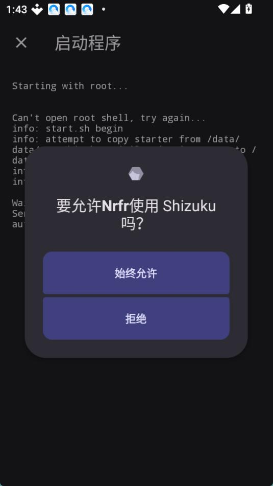

免 Root 改 SIM 国家码：Nrfr 从零上手实操
一份带步骤的实战教程，从电脑端快速启动工具到 Shizuku 授权、双卡配置与还原，覆盖最常见的应用地区限制场景与新手卡点。
读完这篇，你能在一台安卓手机上从零跑通 Nrfr 整条链路——从电脑端工具自动装齐 Shizuku 和 Nrfr，到选卡、改国家码、让应用识别到新地区，最后还原系统干净离场。
准备工作：两样东西确认好
动手之前花三分钟确认前置条件齐了，能省后面一半的排查时间。
第一样，一台安卓手机。 Nrfr 依赖 Shizuku 服务运行，不需要 Root，但要求系统里能正常启动 Shizuku。厂商定制系统之间兼容性有差异——教程里会在对应步骤提醒你哪些机型更可能遇上坎。
第二样，一台 Windows 电脑加一根数据线。 推荐用 Nrfr官网 上的快速启动工具走电脑端流水线——它把「装 Shizuku、装 Nrfr、引导启用」三件事一次做完，省得你手动传 APK 挨个安装。从Nrfr下载拿这份压缩包就行，版本号跟上 Release 页，目前 v1.0.3 大小约 19.2 MB。
准备好这两样，手机上先打开开发者选项：进入设置 → 关于手机 → 连点「版本号」七次，返回主设置就能看到开发者选项入口。进去后，USB 调试、USB 安装、USB 调试（安全设置）——这三项按顺序打开。如果提示未知来源应用安装，一律允许。
分步实操：按顺序点，每步看清楚预期结果
第一步：数据线连上，让电脑认出手机
用数据线把手机接到电脑上，手机屏幕会弹出「允许 USB 调试吗」的对话框，勾上「始终允许」然后点允许。这步预期效果是：电脑设备管理器里能看到一台安卓设备，手机通知栏显示「USB 调试已连接」。
第二步：运行快速启动工具，等它装 Shizuku 和 Nrfr
解压刚才下载的快速启动工具压缩包，双击 exe 运行。工具启动后会自动扫一遍已连接的设备——你的手机应该出现在列表里。确认设备名无误，点开始。
接下来工具会依次做三件事：自动把 Shizuku APK 装到手机、在手机上引导你完成 Shizuku 的授权、接着装 Nrfr。整个过程你主要盯着手机屏幕，Shizuku 授权那一步需要手动确认权限。

全部完成的标志：手机桌面上同时出现 Shizuku 和 Nrfr 的图标，Shizuku 状态栏显示服务运行中。
第三步：打开 Nrfr，选卡、设国家码
点开 Nrfr，首先看到的是本机 SIM 卡列表——双卡机型这里会列两张卡，分别配置别偷懒跳过。选中要改的那张卡，进入国家码设置界面。
国家码怎么选？按目标应用实际支持的地区来。比如 Samsung Health 在部分地区只能用美、日、韩，那你就把码改成对应国家。选码原则和运营商对应关系在 Nrfr文档 里有整理。运营商选项跟着选，保存生效。预期效果是：Nrfr 界面显示修改已生效，系统设置里运营商信息应该能看到新的国家码呈现。

第四步：重开目标应用，验证是否通过检测
改完国家码不能热切换目标应用，必须彻底关闭后重新打开。以 Samsung Health 为例：首次启动会走一遍 SIM 归属地检测流程，之前卡住或报错的地方，这次应该能顺利过。如果应用自身缓存了上次失败的状态，进入应用信息里清一次数据再进。
双卡用户注意两张卡都要改——有些应用会读第一张 SIM，有些会读全部，保守做法是两张都设成同一目标地区。
新手最容易卡的三个地方
卡点一：工具检测不到设备，报 ADB 连接失败
绝大多数时候是数据线问题。先确认插的是传输线不是充电线——便宜的充电线电脑根本不认设备。换一根线、换一个 USB 口，如果还是不行，检查一下手机 USB 模式是不是选了「文件传输（MTP）」，不是的话切过去。v1.0.2 版本曾专门修复过 ADB 服务端的兼容性问题，旧版检测不到设备时优先升级到 v1.0.3。
卡点二：Shizuku 明明运行了，Nrfr 保存后没效果
这一步的排查顺序别乱：先在 Nrfr 里点一次「检查 Shizuku 连接」，确认服务状态正常；再看系统设置里国家码有没有真的变——如果系统层面都没变，就是机型限制了。部分厂商定制系统对运营商配置的写入加了额外限制，改码写入被系统拒绝。这种情况下反复保存没意义，升级 Nrfr 到最新版再试一次，新版可能已修复对应机型的 API 兼容性问题。
卡点三：改了码应用还是不认地区
应用的地区判断不只 SIM 卡这一层。换卡/拔卡后行为会变，说明问题在 SIM 层；换卡无效但换账号注册地就变，那是账号地区；换网络环境才变，那是 IP 层。先做这个「换卡试验」定位问题在哪层，别在错误的方向上耗时间。定位清楚是 SIM 层后，再回到 Nrfr 重新确认国家码有没有选对、保存有没有成功。
用完记得还原
Nrfr 改码是系统级的——改完之后不只是你要修的那一个应用，所有按 SIM 归属地判断地区的应用都会看到新地区。用完目标场景就还原，别留着改码状态让其他应用跟着受影响。Nrfr 里有还原入口，一键恢复到改之前的干净状态。
进阶玩法：改码之外，Shizuku 底座本身还能干不少事——它不只是 Nrfr 的权限来源，项目文档里还列了几种配合其他工具的用法，有兴趣可以顺着 Shizuku 的文档继续挖。这份资料维护在三个开源仓库里，主力放在 GitHub，国内用户访问不稳时 Gitee 或 GitCode 的镜像可以直接用。